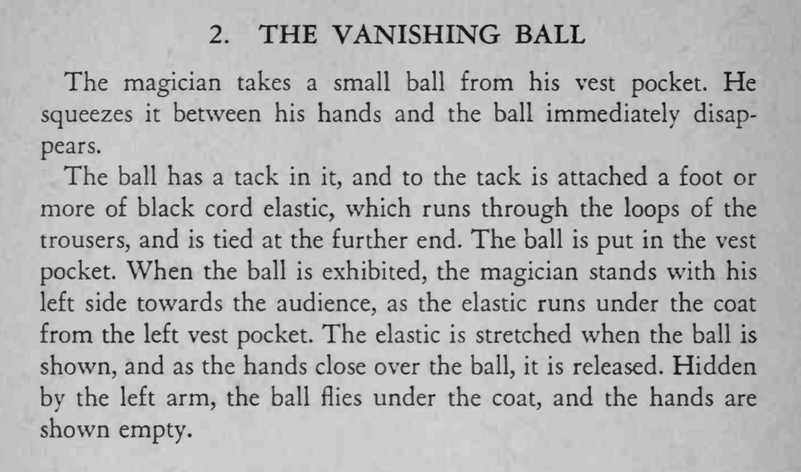

魔术师从马甲口袋里取出一颗小球，双手一合，再摊开时小球已经消失得无影无踪。
全程用左侧身体挡住弹力绳，松手要短促，球才飞得干净利落。

The magician takes a small ball from his vest pocket. He squeezes it between his hands and the ball immediately disappears. The ball has a tack in it, and to the tack is attached a foot or more of black cord elastic, which runs through the loops of the trousers, and is tied at the further end. The ball is put in the vest pocket. When the ball is exhibited, the magician stands with his left side towards the audience, as the elastic runs under the coat from the left vest pocket. The elastic is stretched when the ball is shown, and as the hands close over the ball, it is released. Hidden by the left arm, the ball flies under the coat, and the hands are shown empty.